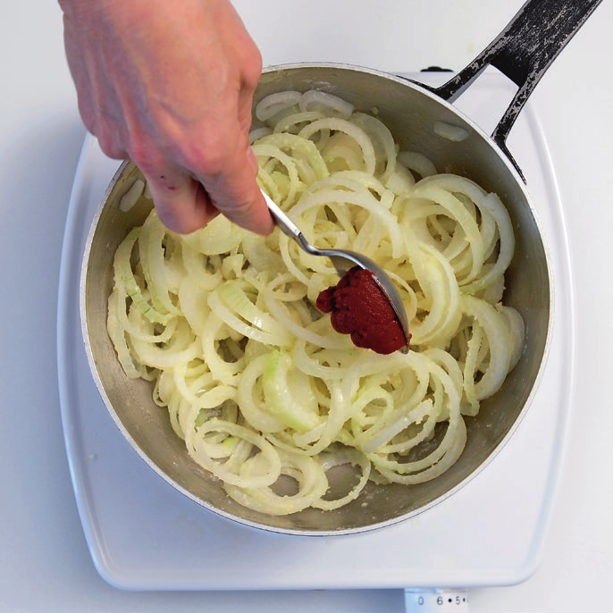

Bratwurst an Zwiebelsauce
Schnörkellos und gut – so soll eine Bratwurst an Zwiebelsauce schmecken. Da braucht es keine speziellen Zutaten, denn die Würze liegt in der Einfachheit des Rezepts.
Zutaten
- 4 Kalbsbratwürste
- 4 mittelgrosse Zwiebeln, in Ringen
- Butter
- 1–2 EL Mehl
- 1 EL Tomatenpüree
- 1,5 dl Wein oder Bouillon
- 1,5 dl Bouillon
- Salz und Pfeffer
Zubereitung
- Würste einschneiden, in einer Pfanne zugedeckt bei mittlerer Hitze für etwa 10 Minuten erwärmen.
- Zwiebeln in Butter dünsten. Mit Mehl bestäuben, gut mischen.
- Tomatenpüree beigeben und 1–2 Minuten rösten.
- Mit Wein oder Bouillon ablöschen.
- Bouillon dazugiessen, zur gewünschten Konsistenz einkochen, abschmecken.
- Bratwürste bei hoher Hitze auf allen Seiten braten, bis sie eine schöne Kruste haben.
- Mit Sauce anrichten.
Tipp
Mit Pommes frites, Country Cuts oder Rösti servieren.
Bilder

- 